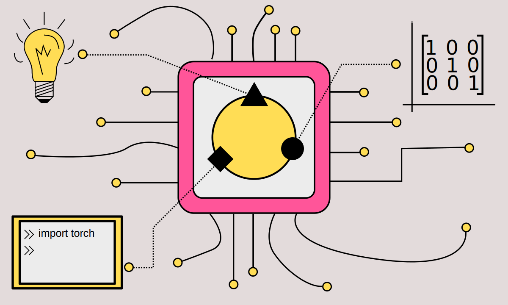

World4AI: Learning AI By Teaching¶
What is World4AI?¶
World4AI is my answer to the question “How can I get to an intermediary level in AI/Machine Learning?”.
The main purpose of Wordl4AI is for me to have a personal platform/blog that I can utilize to learn AI. The attempts that I made so far to teach myself Machine Learning were not especially successful, but there are several reasons why I think that a blog might give me the necessary push to pass the beginner level in AI.
Improvement over time¶
The written word is easy to change and if I make a mistake or find a better way to explain a topic I can change the content, learn from the mistake and move on.
Pressure¶
I found that pressure, either in the form of the wish for good grades or through deadlines in the workplace put me in a state of high focus. By committing to at least one article a week I should be able to put enough pressure on me to keep going.
Learning by teaching¶
I am a firm believer in the “Learning by Teaching” method. By preparing materials for others, I have to ask myself questions from the perspective of a reader and if I am not able to answer those myself, then I have to redo the article, until I have captured the essence of the topic.
Progress tracking¶
So far I have had difficulties staying on track. The topics that I learned were all over the place and at the end I had not a lot to show for. This platform will allow me to track my progress and to focus on the topics that I have not mastered yet.
A better form of CV¶
At the moment I am considering switching careers from finance to AI. If the goal of me learning AI is to find a new job in the field of machine learning, then I can not imagine a better form of CV than a personalized website showing off my progress and commitment.
Teaching and Learning Methods¶
Intuition¶
Especially as a beginner it is essential to build up at least some intuition before jumping into the underlying math. The math is usually easier to digest once you understand the core ideas of the algorithm. To make the transition to math easier I will use graphs and metaphors to explain the hard parts of the algorithms. This is also the part that should hopefully stick for a very long time. The mathematical proofs and the different types of implementations are easily forgotten once you stop practicing, but the general idea of why and how should become second nature to me.
Math¶
A lot of AI is math, but math should not stop anyone from learning artificial intelligence. In my experience math is not as complex, as the convoluted notation suggests. Being able to read the notation is sometimes half the battle. Furthermore, in order to be able to produce a really good explanation on an intuitive level, sometimes I have to fight through the math first.
Programming¶
For me personally programming is the most exciting part of machine learning. It is the part that produces actual results. At this stage you are able to see how your program is able to classify digits or to beat a computer game. Seeing how the neural network improves can only be described as magical.
It is usually at this stage where you have your “aha moments”. The math becomes visible and understandable in a very convenient way and you jump between the text book and the computer editor to appreciate the beauty of the algorithm.